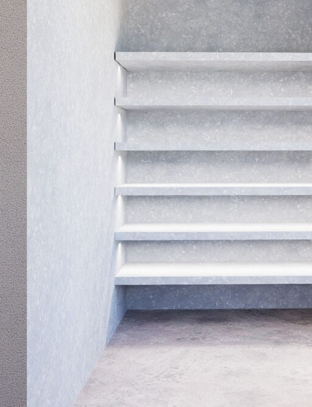

Desktop ↗
Social-Media-Strategie
EVEN
H A I R
Ins Gleichgewicht mit dir selbst.
TikTok & Instagram — Relaunch-Konzept
Markenaufbau · Exklusive Ausstrahlung · Berlin · 2026
↓ Scrollen
01 · Ausgangslage
Der Auftrag & die Marke
Der Auftrag
Kein Neukunden-Druck. Der Salon ist etabliert und exklusiv.
Ziel ist Markenaufbau. Die exklusive Ausstrahlung stärken.
Anspruch: Prominente & kreative Köpfe anziehen.
Kanäle: TikTok & Instagram — kompletter Relaunch.
Die Marke
- Avantgardistisch & künstlerisch — Berlin, Prenzlauer Berg.
- Premium-Segment, geführt von Nadine & Katharina.
- Editoriale Bildwelt: S/W-Porträts, lichtes Design, Naturholz.
- Haltung: ehrlich, einfühlsam, kompromisslos im Geschmack.
- Versprechen: Wunsch & Persönlichkeit in Einklang — der AHA.
02 · Strategischer Kern
Wir verkaufen nicht.
Wir strahlen aus.
Für eine exklusive Marke ist Social Media kein Verkaufs-, sondern ein Signal-Kanal.
03 · Leitkonzept
Ins Gleichgewicht
mit dir selbst.

Der Name EVEN ist das Konzept: das Gleichgewicht zwischen wer du bist und wer du sein willst. Genau das leistet der Salon — Wunsch und Persönlichkeit in Einklang.
Balance
Ebenmaß statt Effekt
Ehrlichkeit
Geschmack, der bleibt
Der AHA
Der Moment, in dem es passt
03 · Markenfundament
Das Fundament
04 · Ziele & Erfolgsmessung
Markenaufbau — nicht Termine
01 Die Adresse werdenDIE avantgardistische Hair-Adresse Berlins.
02 Aura aufbauenExklusivität & Diskretion, die anzieht.
03 Geschmack zeigenHandwerk sichtbar machen — keine Preise.
Woran wir Erfolg messen
04 · Zielgruppe
Ein Tribe, keine Demografie
Menschen, die Geschmack über Trend stellen.
- Kreative — Kunst, Schauspiel, Musik, Mode.
- Erfolgreiche Anspruchsvolle mit hohem Anspruch.
- Berlin-affine Ästheten, die Diskretion schätzen.
Mindset
„Ich will gesehen, nicht bedient werden. Ich zahle für Können und Diskretion.“
04 · Tonalität & Sprache
So klingt EVEN
Empfehlung: „Du“ — aber mit Substanz. Nähe ohne Klasseverlust.
So ✓
- „Wir nehmen uns Zeit für dich.“
- „Das steht dir wirklich — und das nicht.“
- „Eine Entscheidung, kein schneller Schnitt.“
- Stille, ein Satz, viel Raum.
So nicht ✕
- „Jetzt Termin sichern! 💇♀️“
- „Mega Ergebnis!! 😍🔥💯“
- „−20% diese Woche!“
- Emoji-Gewitter, Hashtag-Wand.
Signature-Phrasen
„Find your even.“ · „Ehrlich. Auch wenn’s unbequem ist.“ · „Der Moment, in dem es passt.“
05 · Visuelle Identität
Ein Look wie ein Kunstband
- Viel Negativraum — weniger ist mehr.
- S/W-Porträts für Emotion, lichtes Interieur in Farbe.
- Konsistenter, warmer Farb-Grade über alle Posts.
- Schrift: Playfair/Didot + Inter/Futura.

Der reale Salon — licht, minimalistisch, Naturholz.
05 · Kanal-Architektur
Zwei Kanäle, zwei Rollen
06 · Content-Säulen
Fünf Säulen, ein Gefühl
06 · Redaktionsplan
Ein Dreh-Tag — eine Woche
Das Batching-Prinzip1 Dreh-Tag/Woche (90–120 Min.) → genug Rohmaterial für die ganze Woche. Neben dem Salonbetrieb machbar.
INSTAGRAMTIKTOK
Dreh-Tag (Mo): 2–3 Handwerk-Clips · 1 Verwandlung · 1 Haltungs-O-Ton · B-Roll immer mitnehmen.
07 · Beispiel-Postings
TikTok
Handwerk, Verwandlung, Haltung & Menschen.
07 · Beispiel-Postings
Instagram
Die kuratierte Galerie.
07 · Caption-Bibliothek
Copy-&-paste-Captions
Hashtags dezent (5–10): #slowhair #berlinhair #prenzlauerberg #avantgardehair #haircraft
08 · Exklusivität
Aura ohne Promis
Hebel ✓
- Andeuten statt zeigen (Mantel, Backstage, „diskret“).
- Weniger, aber perfekt posten.
- Knappheit elegant kommunizieren.
- Editorial-Qualität konsequent halten.
- Kooperationen: Mode, Galerien, Nischen-Düfte.
Tabus ✕
- Preise & Rabatte im Feed.
- „Jetzt buchen!“-Spam.
- Promi-Gesichter posten (Diskretion!).
- Trend-Tänze, Cringe-Audios.
- Emoji- & Hashtag-Gewitter.
08 · Wachstum
Sichtbar im Tribe
08 · Fahrplan
Der 90-Tage-Relaunch
Woche 1–2
Fundament
Bio, Highlights, Farb-Grade. 9 Feed-Posts vorproduzieren, erster Dreh-Tag.
Woche 3–6
Launch
Relaunch live. Rhythmus etablieren, Säulen testen, erste Verwandlungen.
Woche 7–10
Schärfen
Top-Performer analysieren (Saves, Watch-Through). Mix anpassen.
Woche 11–12
Skalieren
Erste Kollaboration, Tastemaker-Reposts, Wartelisten-Gefühl.
08 · Erfolgsmessung
Monatlich — 5 Minuten
Save-Rate ↑
Share-Rate ↑
Profilbesuche ↑
Reach (Nicht-Follower) ↑
Watch-Through ↑
DMs / Story-Replies ↑
Tastemaker-Reposts
Follower-Qualität
Leitstern: Lieber 4.000 richtige Follower als 40.000 beliebige.
Find Your
EVEN
Ins Gleichgewicht mit dir selbst.
EVEN Hair · Berlin · 2026